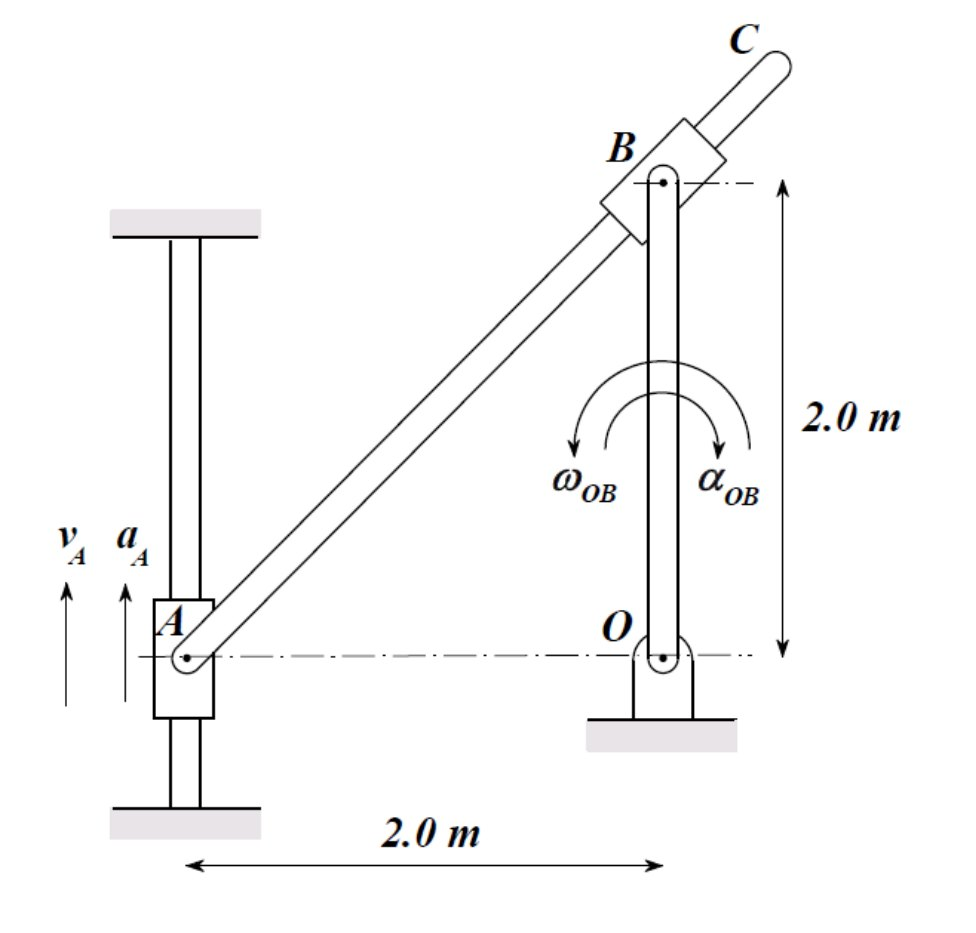

Stangen AC glider gennem muffen i B, mens den drejer: roterende system med origo i A
OPGAVEN (RODS AND COLLARS)
Stangen (2,0 m) drejer om . Stangen glider frit gennem en drejelig muffe i , og enden sidder i en muffe, der kører lodret op, 2,0 m til venstre for .
Find vinkelhastigheden og vinkelaccelerationen af .
rad/s mod uret rad/s² med uret m/s op m/s² op
1 · Punktet Bfast akse O:
2 · Hastighed(16-26) giver
3 · Acceleration(16-29) giver
4 · Tjekvinkel differentieret

→ / mellemrum: næste · ←: forrige · F: fuld skærm · ☰: alle 10 opgaver
TRIN 1 · PUNKTET B
B sidder på OB, som drejer om fast akse
Punkt på legeme om fast akse
Hibbeler (2023), lign. (16-9)
Hibbeler (2023), lign. (16-14)
Mod uret: rad/s
Med uret: rad/s². Pas på fortegnet: OB bremser op
Fra O til B: m (OB står lodret)
Fra A til B: m, altså 45° og længden m
1
Hastighed af B
2
Acceleration af BNormalleddet (200) er 25 gange større end det tangentielle (8)
3
Punktet A er givetA sidder i en muffe på en lodret stang, så både fart og acceleration er lodrette
Mekanismen med vektorerne
B kører 13 gange hurtigere end A. Det er B's bevægelse, der vrider stangen AC
SIGB er punktet med den kendte bevægelse: det sidder på OB, som drejer om en fast akse. A er givet i opgaven.